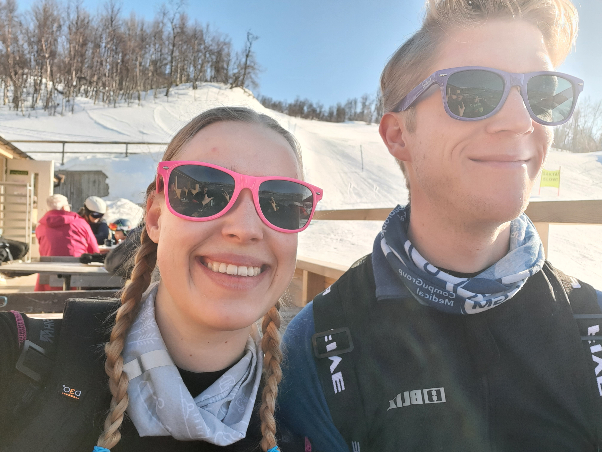

<h1 style="font-size: clamp(1.8rem, 5vw, 5rem);
  text-align: center;">
  Välkommen till Gustav och Millas bröllop!
</h1>

<div class="div-all">
  <button 
    (click)="goToLoginPage()"
    class="button-62">{{isLoggedIn ? 'Gå till anmälan' : 'Tryck här för att logga in'}}
  </button>
</div>
<owl-carousel-o [options]="customOptions">
  @for(img of images; track img){
    <ng-template carouselSlide>
      
    </ng-template>
  }
</owl-carousel-o>
<!-- I can add aspect ratio under object fit ex
 aspect-ratio: 9 / 16 
 the object fit is not needed-->

<!-- <head>
  <style>
    img{
      max-width: 100%;
      height: auto;
      object-fit: cover;
    }
      .center {
          display: block;
          margin-left: auto;
          margin-right: auto;
      }
  </style>
</head>

<body>
  
</body> -->
